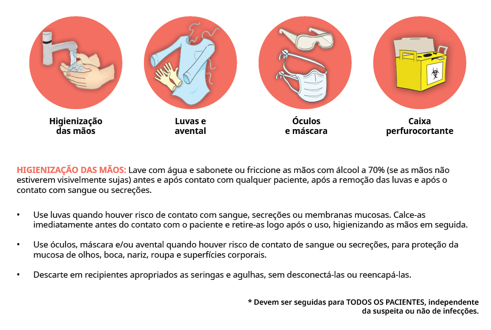
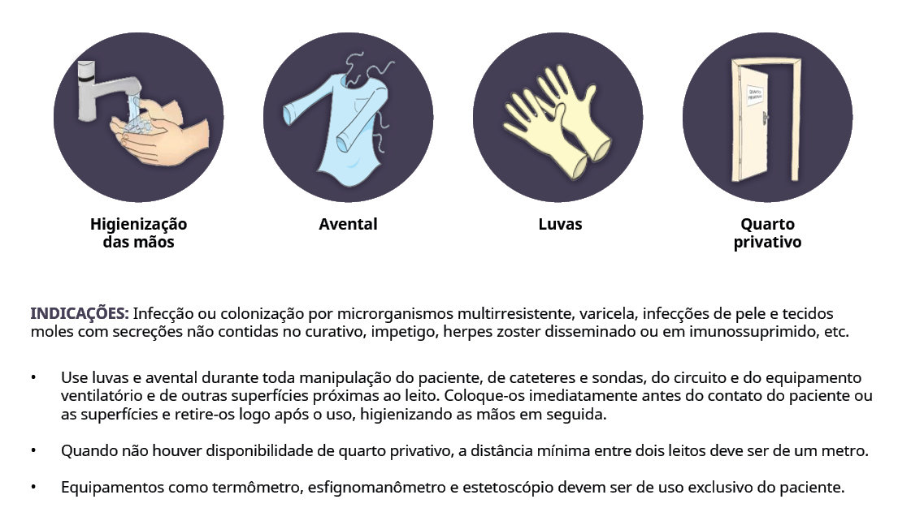
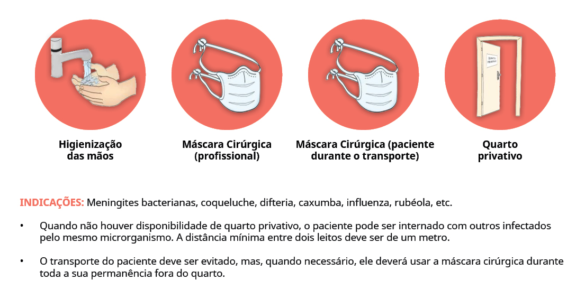
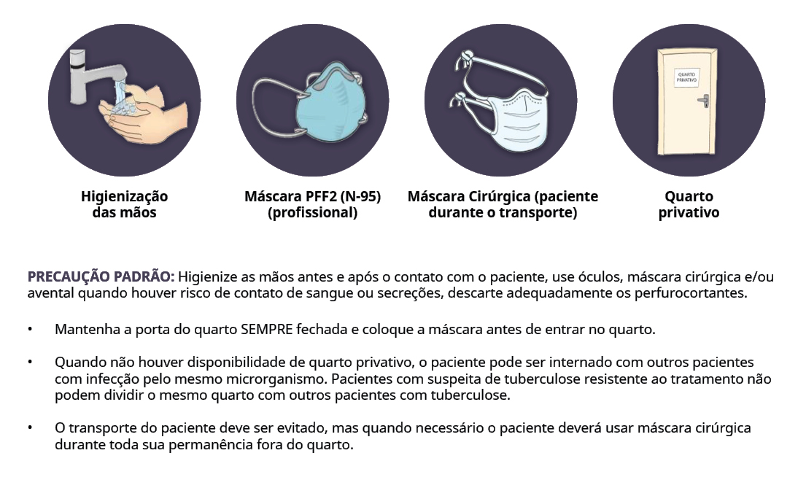

Atendimento ao residente com quadro suspeito ou com diagnóstico de Covid-19
Mesmo com todos os cuidados, é possível que os residentes da ILPI tenham contato com o coronavírus e desenvolvam a Covid-19.
Nesta aula, você vai conhecer os procedimentos para atender aos casos suspeitos e confirmados de Covid-19 dentro da instituição e o que fazer em caso de agravamento do quadro das pessoas idosas. Ao final da aula, você vai ser capaz de desenvolver estratégias para o atendimento aos residentes com sinais ou sintomas da doença.
Casos suspeitos ou confirmados
Residentes suspeitos ou confirmados de Covid-19 devem ser imediatamente colocados em isolamento. Essa medida é essencial para evitar a transmissão do novo coronavírus para outras pessoas. Recomenda-se que o isolamento ocorra em quartos individuais, se isso não for possível, é preciso organizar uma área reservada para esses residentes.
Espaços para isolamentos dos residentes com suspeita ou diagnóstico de Covid-19
No caso de diagnóstico confirmado de Covid-19, deverão ser alojados em quartos individuais bem ventilados, com banheiro em anexo, pois há a possibilidade de eliminação do vírus pelas fezes e alguns pacientes têm apresentado quadros diarreicos.
É preciso manter a distância de 1 metro entre os residentes, e a área deve ter banheiro anexo.
Convivência social
Nessa conjuntura, pensar em estratégias de vigilância para evitar a contaminação local e ao mesmo tempo garantir os direitos da pessoa idosa, torna-se desafiador. Isso fez com que as ILPIs redobrassem a atenção e o cuidado com os residentes, adotando medidas como o distanciamento social e a restrição de visitas, incluindo familiares e amigos.

ATENÇÃO ÀS COMORBIDADES
Por si só, a população de pessoas idosas já é mais vulnerável à Covid-19. Portanto, deve-se separar os residentes suspeitos de Covid-19 dos residentes com Covid-19 confirmada, e a existência de comorbidades aumenta ainda mais essa vulnerabilidade.
Além disso, ainda existem aquelas comorbidades que contraindicam o isolamento do paciente em quarto individual ou que devem ser monitorados 24 horas pela equipe assistencial. Esses casos devem ser monitorados pelos profissionais/cuidadores do serviço, mantendo-se o devido cuidado com o uso dos EPIs e a distância de mais de 1 metro entre os residentes.
SÃO COMORBIDADES QUE CONTRAINDICAM ISOLAMENTO EM QUARTO INDIVIDUAL
-
Doenças cardíacas crônicas descompensadas.
-
Doenças respiratórias crônicas descompensadas.
-
Doenças renais crônicas descompensadas.
-
Imunossupressores.
-
Portadores de doenças cromossômicas com estados de fragilidade imunológica.
Nesses casos, além da atenção aos residentes, é preciso garantir o devido cuidado com o uso dos equipamentos de proteção individual dos profissionais de saúde e cuidadores.
Residentes com Covid-19 suspeita ou confirmada devem ser monitorados por profissionais de saúde, em relação a evolução dos sintomas, sinais vitais, a saturação de oxigênio (via oximetria de pulso), entre outros, conforme orientação médica, visando a identificação e gerenciamento oportuno da deterioração clínica. Para o manejo desses residentes devem ser observadas as orientações médicas e as orientações do Ministério da Saúde.
De acordo com orientações do Ministério da Saúde (2020) no Protocolo de Manejo Clínico do Novo Coronavírus (Covid-19) na Atenção Primária à Saúde, os residentes que em sua evolução apresentarem pelo menos um sinal ou sintoma de gravidade para Síndrome Gripal devem ser imediatamente transferidos para um hospital de referência.
Segundo esse documento do Ministério da Saúde, os sinais e sintomas de gravidade para Síndrome Gripal são:
DÉFICIT NO SISTEMA RESPIRATÓRIO:
-
Falta de ar ou dificuldade para respirar; ou
-
Ronco, retração sub/intercostal severa; ou
-
Cianose central; ou
-
Saturação de oximetria de pulso menor que 95% em ar ambiente; ou
-
Taquipneia (>30 mpm).
DÉFICIT NO SISTEMA CARDIOVASCULAR:
-
Sinais e sintomas de hipotensão (hipotensão arterial com sistólica abaixo de 90mmHg e/ou diastólica abaixo de 60mmHg); ou
-
Diminuição do pulso periférico.
Sinais e sintomas de alerta adicionais:
-
Piora nas condições clínicas de doenças de base;
-
Alteração do estado mental, como confusão e letargia;
-
Persistência ou aumento da febre por mais de 3 dias ou retorno após 48 horas de período afebril.
Se houver necessidade de encaminhamento do residente com suspeita ou com Covid-19 confirmada, para um serviço de saúde, deve-se notificar previamente ao serviço, assim como ao serviço móvel de urgência (se for o caso).
Precauções para caso de residente suspeito ou diagnosticado com Covid-19
Em caso de residente suspeito ou diagnosticado com a Covid-19, devem ser adotados um conjunto de precauções: padrão, para gotículas e precauções de contato no cuidado.
Assume-se que todas as pessoas estão potencialmente infectadas ou colonizadas por um patógeno que pode ser transmitido no ambiente de assistência à saúde e devem ser implementadas em todos os atendimentos, independente do diagnóstico do paciente, mediante o risco de exposição a sangue e outros fluidos ou secreções corporais.
As gotículas têm tamanho maior que 5 µm e podem atingir a via respiratória alta, ou seja, mucosa das fossas nasais e mucosa da cavidade bucal.
Os aerossóis são partículas menores e mais leves que as gotículas, que permanecem suspensas no ar por longos períodos e, quando inaladas, podem penetrar mais profundamente no trato respiratório.
ATENÇÃO
Alguns procedimentos realizados em pacientes com infecção pelo SARS-CoV-2, podem gerar aerossóis, como por exemplo, intubação ou aspiração traqueal, ventilação mecânica não invasiva, ressuscitação cardiopulmonar, ventilação manual antes da intubação, coletas de amostras nasotraqueais, broncoscopias, etc.
Para esses casos, as precauções para gotículas devem ser substituídas pelas precauções para aerossóis.
Confira os equipamentos e ações de precaução recomendados pela ANVISA.
EQUIPAMENTOS DE PRECAUÇÃO PADRÃO
 Fonte: Nota Técnica GVIMS/GGTES/ANVISA Nº 05/2020 - Atualizada em 24/06/20EQUIPAMENTOS PARA PRECAUÇÃO DE CONTATO
 Fonte: Nota Técnica GVIMS/GGTES/ANVISA Nº 05/2020 - Atualizada em 24/06/20EQUIPAMENTOS PARA PRECAUÇÃO POR GOTÍCULAS
 Fonte: Nota Técnica GVIMS/GGTES/ANVISA Nº 05/2020 - Atualizada em 24/06/20EQUIPAMENTOS PARA PRECAUÇÕES POR AEROSSÓIS
 Fonte: Nota Técnica GVIMS/GGTES/ANVISA Nº 05/2020 - Atualizada em 24/06/20Equipamentos de Proteção Individual
Para o atendimento a todos os casos suspeitos ou confirmados para Covid-19, é necessário o uso dos seguintes Equipamentos de Proteção Individual (EPIs):
-
Óculos de proteção ou protetor facial (face shield);
-
Máscara cirúrgica;
-
Avental;
-
Luvas de procedimento;
-
Gorro (para procedimentos que geram aerossóis).
No caso da realização de procedimentos que gerem aerossóis, deverão ser adotadas as precauções para aerossóis. Os profissionais devem sempre usar máscara N95, PFF2 ou equivalente durante os procedimentos.
RELEMBRANDO ALGUNS PROCEDIMENTOS PRODUTORES DE AEROSSÓIS:
-
Indução de tosse
-
Intubação traqueal
-
Ventilação não invasiva
-
Ressuscitação cardiopulmonar
-
Ventilação manual antes da intubação
-
Indução de escarro
-
Coleta de amostras nasotraqueais

OS PROFISSIONAIS DE LIMPEZA DEVEM UTILIZAR OS SEGUINTES EPIs PARA REALIZAR SEU TRABALHO:
-
Gorro
-
Óculos de proteção ou protetor facial
-
Máscara cirúrgica
-
Avental
-
Luvas de borracha de cano longo
-
Botas impermeáveis
O responsável pela ILPI deve disponibilizar todos os EPIs necessários, incluindo as máscaras N95 ou equivalente.
Para uma maior segurança, é necessário a reorganização dos espaços na ILPI a fim de garantir:
-
UM LOCAL PARA GUARDA DOS EPIs, PRÓXIMO À ÁREA DOS RESIDENTES
Ter os EPIs sempre à mão, em lugar próximo, evita o trânsito desnecessário dentro da instituição e incentiva o uso de todos os equipamentos necessários. -
UMA LIXEIRA PERTO DA SAÍDA DO QUARTO DOS RESIDENTES
A lixeira nessa posição facilita o descarte correto e imediato dos EPIs e evita a circulação dos profissionais com equipamentos potencialmente contaminados. -
UMA IDENTIFICAÇÃO NA PORTA DO QUARTO COM OS EPIs NECESSÁRIOS
Essa lista facilita a identificação dos EPIs e a conferência do uso, antes de entrar no quarto ou no ambiente específico.
As máscaras de tecido podem ser usadas para impedir que a pessoa que está usando espalhe secreções respiratórias ao falar, espirrar ou tossir (controle de fonte), porém elas não são consideradas como EPI. Portanto, não devem ser utilizadas por profissionais ou cuidadores quando estiverem prestando assistência direta ao residente.
Os residentes com febre ou sintomas respiratórios agudos devem ficar em seus quartos (de preferência com banheiro e bem ventilados) por 14 dias e só devem sair caso precisem de atendimento médico ou outras atividades estritamente necessárias. Devem usar máscara cirúrgica comum.
Excepcionalmente, se a instituição não tiver condições de fazer a separação de todos os residentes por situação específica, recomenda-se que:
-
Os residentes com Covid-19 suspeita ou confirmada podem ser alojados no mesmo quarto ou área. No entanto, recomenda-se que NÃO sejam alojados no mesmo quarto/área do restante dos residentes;
-
Os residentes que retornaram de internação hospitalar com diagnóstico confirmado de Covid-19 podem ser alojados junto com os residentes com Covid-19 confirmada.
-
Os residentes recém-admitidos ou que retornaram de internação hospitalar, por diagnóstico diferente da Covid-19, podem ser alojados em um mesmo quarto ou área, ou, em último caso, na ausência de condições de mantê-los afastados dos demais, na mesma área dos residentes em geral.
Sempre que possível providenciar produtos e materiais de uso exclusivo, como termômetros, aparelhos de pressão, etc. Materiais de uso coletivo devem ser limpos e desinfetados. Realizar limpeza e desinfecção de todos os equipamentos, produtos para saúde e os utensílios utilizados.
Se possível, definir profissionais para o atendimento de residentes com quadro suspeito ou confirmado de Covid-19.
Os profissionais devem ter especial atenção na retirada e descarte dos EPIs.
Estes profissionais não devem atender a outros residentes e evitar transitar nos locais onde se encontram os demais residentes, principalmente quando estiverem usando os EPIs. Os EPIs só devem ser utilizados enquanto os profissionais estiverem no atendimento direto aos pacientes com suspeita ou diagnóstico da Covid-19.
As roupas, incluindo lençóis, toalhas e cobertores, de residentes com quadro suspeito ou confirmado de Covid-19 devem ser lavadas separadamente das roupas dos demais residentes. Deve ser utilizado sabão/detergente para lavagem e algum saneante com ação desinfetante como por exemplo, produtos à base de cloro. Devem ser seguidas as orientações de uso dos fabricantes dos saneantes.
Na retirada da roupa suja deve haver o mínimo de agitação e manuseio. As roupas devem ser retiradas do quarto do residente e encaminhadas diretamente para a máquina de lavar, dentro de saco plástico. Os profissionais devem usar EPIs para esse procedimento.
Agravamento do quadro e necessidade de internação do idoso
Os critérios clínicos de gravidade que justificam a transferência da ILPI para um hospital ou unidade de urgência são:
-
Sintomas de síndrome gripal.
-
Febre acima de 38°C (aferida ou referida) ou aumento de 1,1º C da temperatura basal com tosse ou dificuldade respiratória ou dor de garganta associado a: saturação de O2 < 95% OU;
-
Sinal de desconforto respiratório ou aumento da frequência respiratória basal (falta de ar ou dificuldade para respirar/ronco, retração sub/intercostal severa/cianose central);
-
Piora das condições crônicas de base;
-
Hipotensão (pressão sistólica abaixo de 90mmHg e/ou diastólica abaixo de 60mmHg).
Além disso, deve-se considerar como indicativos de maior gravidade na pessoa idosa:
-
Presença de delirium hipo ou hiperativo como sinal único de complicação;
-
Redução da saturação basal do idoso, se possível (medidas prévias);
-
Interrupção da ingestão alimentar;
-
Deterioração da marcha;
-
Temperatura: medida única > 37,8°C; medidas repetidas > 37,2°C; aumento > 1,1°C da linha de base, como indicativo de febre.
Chegamos ao final da aula!
Nesta aula, você conheceu os procedimentos para atender aos casos suspeitos e confirmados de Covid-19 dentro da instituição e o que fazer em caso de agravamento do quadro das pessoas idosas. Agora, você é capaz de desenvolver estratégias para o atendimento aos residentes com sinais ou sintomas da doença.
Antes de seguir em frente, que tal responder ao quiz?
Contatos sociais em tempos de isolamento
O processo de morte, o óbito e os cuidados com o corpo na ILPI